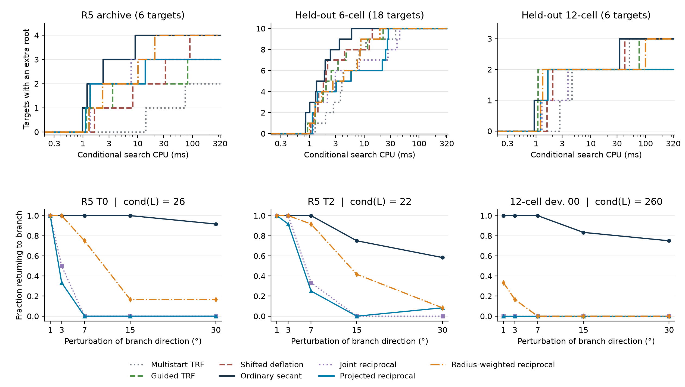
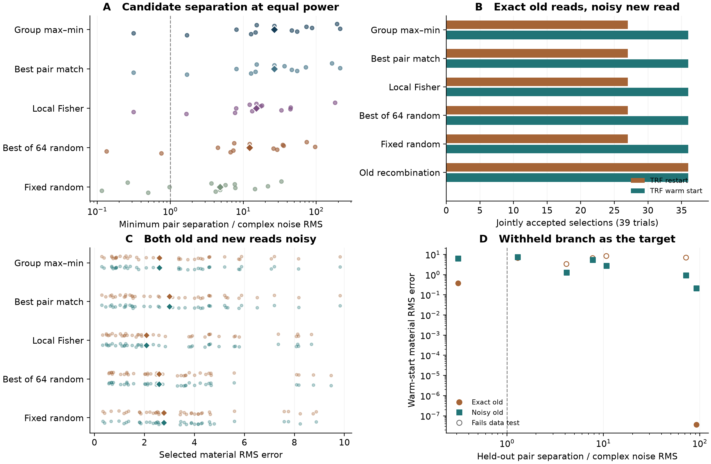
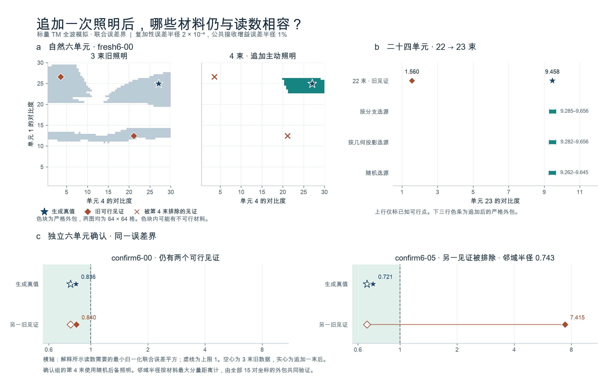
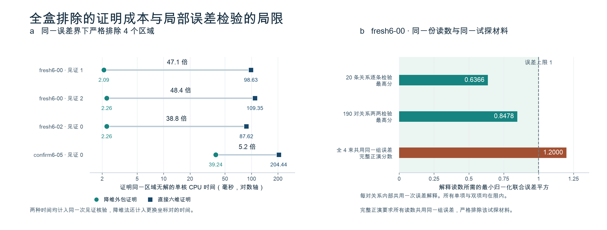

两个材料解释都符合旧读数，再照一次能排除一个吗？
在一个刻意设计的二维仿真里，24 个单元的材料值都可以独立变化。同一组 22 束旧读数容许第 23 个单元的材料对比度为 1.560 或 9.458。加测一束后，把 24 个未知量都留在原材料盒里检查，这个单元的所有可行值都落在 [9.28, 9.66]。
在六材料算例中，要证明同一整块区域没有解，把搜索降到两个材料坐标，花了直接六维方法约 1/5 到 1/48 的 CPU 时间。随机新增束和仅按几何选的新增束，也能在这个例子里排除较远的解释。
沿旧读数看不到的方向搜索，找到了六单元组的 34 个材料解
固定一个接收器和一组入射场，先从旧读数拟合出一个材料解。原读数看不到的一部分复响应还可以变化。普通弦方法在这部分坐标里求实材料条件，倒数投影则把沿一条弦的复幅度先消去，只搜索弦的方向。两种方法找到的材料都交回独立全波体积分方程验算。
| 搜索方法 | 18 个留出六单元目标 验证的总材料数 | 6 个留出十二单元目标 找到的额外材料数 |
|---|---|---|
| 普通弦 | 34 | 4 |
| 有界多起点最小二乘 | 34 | 4 |
| 联合倒数坐标 | 34 | 3 |
| 倒数投影 | 34 | 2 |
| 半径加权倒数投影 | 34 | 3 |
每个目标和方法的条件搜索预算为 0.32 CPU 秒，含初始化、尝试和验根。共享锚点另计。六单元的 34 包括 18 个共同锚点。几何与生成材料均独立于方法开发组。
我们还让成熟的 POLSYS_PLP 同伦程序从几何和读数直接求多项式根。六单元每例追踪 20 条路径，18 例的 360 条均返回有限端点，得到相同的 34 个盒内材料，耗时中位数为每例 24.53 毫秒。在十二单元组，每例路径数上升到 924，全部 5,544 条里有 144 条跟踪失败，仅验证了普通弦已找到的 5 个材料。POLSYS_PLP 原文

等功率补测可以放大已知解释之间的读数差
把候选材料分别带入同一物理模型，预报可实现的新照明会产生什么回波。选择一束单位辐射功率的相干照明，让最难区分的一对候选也尽可能产生不同的复读数。其他对照用同样的发射功率，其中包括固定随机束和旧发射器的重新组合。
在 24 个自然留出目标里，有 13 个在旧数据上找到两个或更多材料解。按候选选束时，这 13 例最难分候选对的读数差中位数是 0.00533，固定随机束是 0.000961，旧束重组约为 4×10−17。这些差值针对已经找到的候选。
对同一束新增照明，旧读数精确时，用多个分支做最小二乘起点的结果有 36/39 次通过新旧数据检验，普通重启有 27/39 次。旧读数也带噪时，两种启动都通过 39/39 次，最终选中材料的真值 RMS 误差中位数同为 2.595。
因此候选之间的读数差、拟合是否通过、选中的材料误差须分别看。在自然十二单元组有一例，三份解释的最小分隔约 0.000063，低于该实验的单次读数噪声 RMS 0.0002。

一束新照明怎样排除整个材料区域
考虑每组复读数的一项加性误差与一个共同的复接收增益。加性误差向量的欧氏尺度为 0.0002，增益相对标称值的尺度为 1%。二者的归一化平方和至多为 1。以下保证针对这个误差模型、给定的二维离散正演和全部 24 个材料均在 [0.5, 12] 的盒子。
这个算例的 22 束旧照明用两份原型材料专门构造，两份原型的第 23 个材料分别为 1.560 和 9.458。两份完整场景都通过全波和误差界检查。加入一束后，利用入射场的线性结构消去其余材料对所检验等式的影响，再用区间运算检查这个单元的整个候选范围。只要区间内还可能有合法解释，就保留它。
| 同功率新增一束的选法 | 第 23 个材料的可行值外包 |
|---|---|
| 按已发现分支选束 | [9.28, 9.66] |
| 只按几何投影选束 | [9.28, 9.66] |
| 固定随机选束 | [9.26, 9.65] |
区间向外舍入。在本算例中，这三种照明都能排除 1.560 一带的所有解释，并保留 9.458 的全波可行见证。区间给出可行材料该坐标的外包，内部每一点是否可实现仍需额外证明。
这里给出的结论只定位了一个单元。在其他 23 个材料自由变化时，区间以外的第 23 个材料仍与读数和误差界矛盾。这个设计实例的比较支持新增独立照明的作用，三种外包的宽度接近。
自然多解能排除，换一套孔径仍会遇到两份合法解释
18 个自然六单元目标的旧照明与材料独立。三束旧读数在有界误差下容许 16 份不同于生成材料的完整解释，逐份用全波方程验证。添加一束后，按候选选束和固定随机照明都严格排除了这 16 份解释各自周围的一片区域，局部 Fisher 选束排除了 15 份。
每次任选两个材料坐标，消去其余四个，求一个包含所有可行材料在这两维投影的外包。六个坐标共有 15 种配对，全部使用同一份四束读数。投影里排除的一格，对其余四个材料在盒子中怎样取值都成立。
更换几何后，独立复核用 177° 的旧源孔径和 220° 的新增源孔径，共 8 例。把带噪旧观测当作精确等式求解，4 例只找到一个根，4 例没有找到根。主动策略都回退为局部 Fisher 或随机照明。在另行用误差界验证的两份旧错误解释中，新读数排除了一份。另一份与真实材料在新读数下都严格可行，两份材料的 RMS 距离约为 0.125。

同样证明整块区域无解，消元节省了多少计算
只用旧观测固定四个样本里的八块区域。每块围绕一份旧候选材料，在两个坐标各取 ±0.5，其余四个坐标保持整个材料范围。新增观测之后，坐标消元加区间检验和直接六维 Bernstein 检验给出相同结论。四块各有一个共用的严格可行点，其余四块都严格无解。
| 严格排除的区域 | 坐标消元 CPU（秒） | 直接六维 CPU（秒） | 直接六维耗时倍数 |
|---|---|---|---|
| fresh6-00，旧候选 2 | 0.00209 | 0.09863 | 47.1 |
| fresh6-00，旧候选 3 | 0.00226 | 0.10935 | 48.4 |
| fresh6-02，旧候选 1 | 0.00226 | 0.08763 | 38.8 |
| confirm6-05，旧候选 1 | 0.03924 | 0.20444 | 5.21 |
表中两法均计入共用的可行点检查。confirm6-05 用首个坐标对未能排除，按固定顺序试到第三个坐标对后才成功。计入这次换图，排除步骤本身耗时 0.0391 秒，直接六维耗时 0.2043 秒，相差 5.23 倍。四个样本的比较说明了局部消元可能省下的计算量，普遍加速仍需更大样本验证。
为什么 190 种组合都通过，整份材料却解释不了一次测量？
一台接收器在这四束照射中使用同一个增益，四个读数也共用一份噪声预算。把材料分开检验，每次都能挑一份最有利的误差。一次实验只能发生其中一组误差。
六个材料里每三个位置能构造一条读数关系，总共 20 条。对同一份材料和同一组全波仿真读数，全部 20 条单独检查，最高误差分数是 0.637。任取两条共用一份误差，查遍 190 种组合，最高也只有 0.848。允许上限为 1。让四个原始读数共用误差，实际最低分是 1.200。这一份材料无法解释实际读数。
我们也核实了这个材料周围的一小片区域：六个坐标各可上下变化 2−22，每种两项检验仍能通过，完整物理检验却处处失败。这个宽度只用于证明反例确实占了一块区域。反例来自事后沿材料方向寻找误差边界，不能拿来估算发生概率。

数据、推导与下一轮
本轮全部结果来自一台接收器、有限材料单元的二维全波仿真。计时是软件计算时间，照明成本另按发射次数与归一化功率统计。